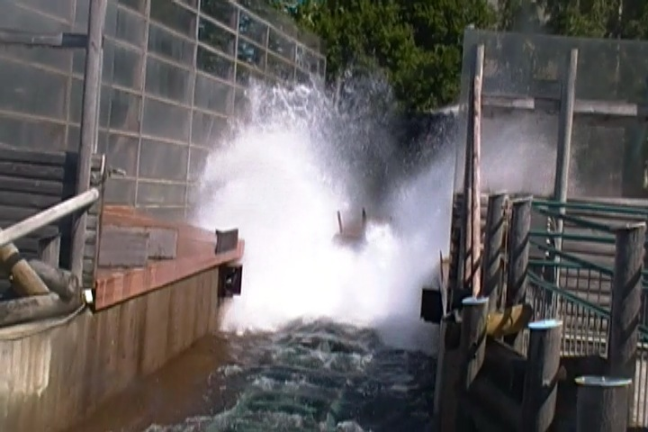
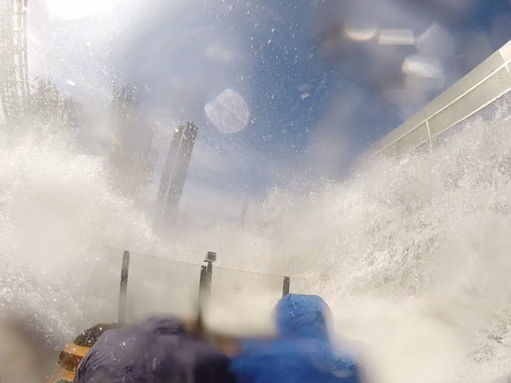
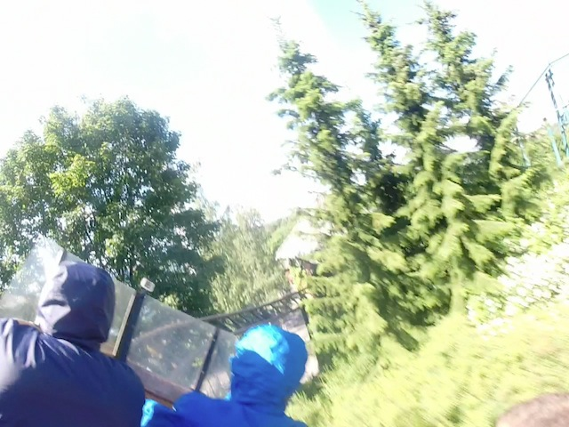

| |

Vonkaputous Review

Today at Linnanmäki, we'll be reviewing Vonkaputous, the park's water coaster. Now this is an intersting ride as its the only Premier water coaster ever. They only built two, and one of them, Buzzsaw Falls, got turned into Powder Keg, which while I never rode Buzzsaw Falls, I think it's safe to say, is a MUCH better ride, as Powder Keg is really good. So this was the only Premier water coaster in the world. So in a way, it's sort of a unique ride, except for the fact that when you get beyond the different track and trains and all the pointless nerdy stuff that only coaster enthusiasts notice, it pretty much feels like all the other water coasters (Hey, at least this one is actually a water coaster and not a shoot the chutes ride that some are trying to make a credit). So let's just get this over with. Get in the seat (Your ass will get wet. Just a fair bit of warning. You will get SOAKED on this ride), pull down the lapbar, and away we go. We roll around a turn and start climbing up the lifthill. We eventually reach the top, go through some straight track, and head down a curved drop. We head down, gain some speed, and TAKE THE TUNNEL!!! You know, this is pretty fun. Nothing special, but just a fun coaster. It doesn't even seem like a water coaster. There's no water at all so far. At least the other water coasters will have some water. This is just coaster so far. We burst out of the tunnel, heading out into a big banked turn. We keep turning, and even pass through a quick bit of headchoppers before heading up a small hill and into some straight track. We head down another curved drop. Wee, gaining more and more speed. Wait, what's that? I...I think I see the...OH SH*T!!!!! SPLASH!!!! We hit right into the water, which pretty much acts like a tidal wave. OK. Not like a tidal wave, but it sprays all over the boat, soaking EVERYONE!!! You will get DRENCHED on this ride!!! We then head around a couple turns in the track now soaked in water, and cruise on back into the station. It's actually a fun water coaster. OK, it's no Divertical (but let's be real, NOTHING is going to top that as far as water coasters go). But it still is a fun little ride. And if you're looking to cool off, well this ride will definetly do that.
6/10
Location: Linnanmäki
Opened: 2001
Built by: Premier
Last Ridden: June 28, 2014
Vonkaputous Photos


Home
|